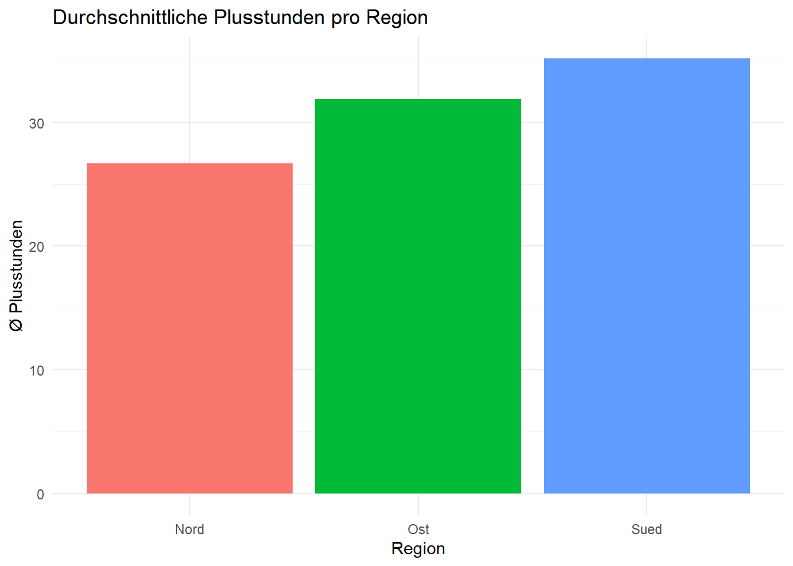
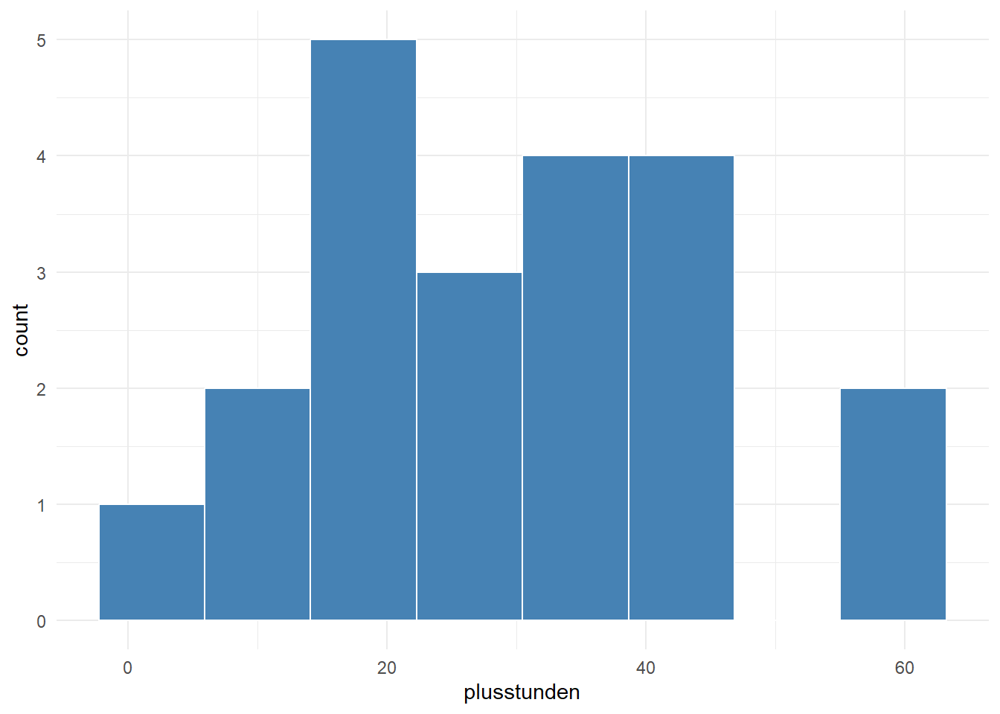
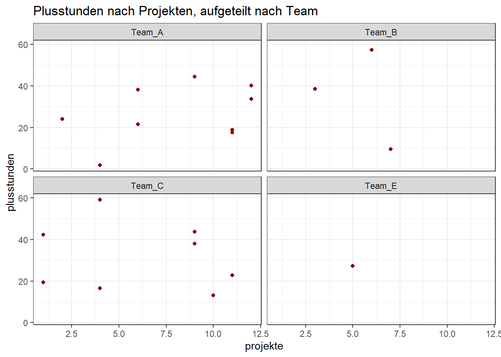

install.packages("ggplot2")Einheit 3: Visualisierung mit ggplot2 & Daten aufräumen
In dieser Einheit geht es um zwei Dinge, die beim echten Arbeiten sofort gebraucht werden:
- Visualisierung mit
ggplot2— vorzeigbare Grafiken schichtweise aufbauen - Unordentliche Daten aufräumen — Kopfzeilen, falsche Datentypen und Spaltennamen in Ordnung bringen
- Ergebnisse sichern — Daten und Grafiken speichern
Am Ende steht das Abschlussprojekt zu allen Einheiten.
Für Teil 1 wird zusätzlich das Paket ggplot2 gebraucht. Falls noch nicht geschehen, einmalig in der Console installieren:
Teil 1: Visualisierung mit ggplot2
Die Daten vorbereiten
Wir arbeiten mit den Mitarbeitenden-Daten aus Einheit 2 — eingelesen und mit der Region verbunden:
library(dplyr)
library(ggplot2)
mitarbeitende_join <- read.csv("data/raw/mitarbeitende.csv") %>%
left_join(read.csv("data/raw/teams.csv"), by = "team")Bei Vera fehlen die Plusstunden. Ohne y-Wert kann ggplot keinen Punkt zeichnen und würde bei jeder Grafik warnen („Removed 1 row containing missing values”). Deshalb entfernen wir diese Zeile einmal vorab:
mitarbeitende_plot <- mitarbeitende_join %>%
filter(!is.na(plusstunden))Der Grundaufbau
ggplot2 baut Grafiken schichtweise mit + auf. Der Grundaufbau ist immer gleich:
ggplot(daten, aes(x = ..., y = ...)) + # Daten + welche Spalte auf welche Achse
geom_...() # welche Form: Punkte, Balken, Linien …Streudiagramm: geom_point()
ggplot(mitarbeitende_plot, aes(x = projekte, y = plusstunden)) +
geom_point(color = "steelblue", size = 2) +
labs(title = "Plusstunden nach Anzahl Projekte",
x = "Anzahl Projekte", y = "Plusstunden") +
theme_minimal()
Nach Gruppe einfärben
Eine weitere Spalte in aes() auf color legen — ggplot vergibt automatisch Farben und eine Legende:
ggplot(mitarbeitende_plot, aes(x = projekte, y = plusstunden, color = team)) +
geom_point(size = 2) +
labs(title = "Plusstunden nach Projekten, eingefärbt nach Team") +
theme_minimal()
color = "steelblue" außerhalb von aes() setzt eine feste Farbe; color = team innerhalb von aes() färbt nach den Werten einer Spalte.
Balkendiagramm einer Kennzahl: geom_col()
dplyr und ggplot2 greifen ineinander: erst die Kennzahl berechnen, dann direkt an ggplot() weiterreichen. Personen ohne Region (Uwe) filtern wir vorher heraus. Die Farbe dient hier nur der Optik — die Regionen stehen schon auf der x-Achse, deshalb blenden wir die Legende mit show.legend = FALSE aus:
mitarbeitende_plot %>%
filter(!is.na(region)) %>%
group_by(region) %>%
summarise(plusstunden_mean = mean(plusstunden)) %>%
ggplot(aes(x = region, y = plusstunden_mean, fill = region)) +
geom_col(show.legend = FALSE) +
labs(title = "Durchschnittliche Plusstunden pro Region",
x = "Region", y = "Ø Plusstunden") +
theme_minimal()
Verteilungen: geom_boxplot() und geom_histogram()
ggplot(mitarbeitende_plot, aes(x = team, y = plusstunden)) +
geom_boxplot(fill = "lightgrey") +
labs(title = "Plusstunden je Team") +
theme_minimal()
geom_histogram() zeigt die Verteilung einer einzelnen Zahlenspalte:
ggplot(mitarbeitende_plot, aes(x = plusstunden)) +
geom_histogram(bins = 8, fill = "steelblue", color = "white") +
theme_minimal()
Teilgrafiken: facet_wrap()
facet_wrap(~spalte) zerlegt eine Grafik in ein Raster — eine Teilgrafik pro Ausprägung:
ggplot(mitarbeitende_plot, aes(x = projekte, y = plusstunden)) +
geom_point(color = "darkred") +
facet_wrap(~team) +
labs(title = "Plusstunden nach Projekten, aufgeteilt nach Team") +
theme_bw()
Grafik speichern: ggsave()
ggsave() speichert die zuletzt erzeugte Grafik:
ggsave("output/plusstunden_team.png", width = 8, height = 5)Übung
- Zeichne ein Streudiagramm von
projektegegenplusstunden, eingefärbt nachgeschlecht. - Erstelle ein Balkendiagramm mit der Anzahl Personen pro
land(Tipp: erstcount(), danngeom_col()).
# dein CodeTeil 2: Unordentliche Daten aufräumen
Echte Dateien sind selten sofort verwendbar: oben stehen Info-Zeilen, Zahlen kommen als Text an, Spaltennamen enthalten Leerzeichen. Die Datei data/raw/bezirke_roh.csv ist so ein Fall — Semikolon-getrennt, mit vier Info-Zeilen vor der eigentlichen Kopfzeile.
Die Rohdatei ansehen
Wir lesen zunächst ohne Kopfzeile ein (header = FALSE), um zu sehen, was in der Datei steht. Weil in jeder Spalte auch Text vorkommt, sind alle Spalten character:
roh <- read.csv2("data/raw/bezirke_roh.csv", header = FALSE)
roh V1 V2 V3 V4
1 Export Bezirksdaten
2 Quelle: Beispielstatistik Wien
3 Stand: Maerz 2026
4
5 Bezirk Nummer Bezirk Name Haushalte Mittleres Einkommen
6 1 Innere Stadt 9800 52000
7 2 Leopoldstadt 54000 38500
8 3 Landstrasse 46000 41200
9 4 Wieden 16000 49800
10 5 Margareten 30000 36400
11 6 Mariahilf 15000 44700
12 7 Neubau 16000 47300
13 8 Josefstadt 12000 50100Kopfzeile setzen und Info-Zeilen entfernen
Die echten Spaltennamen stehen in Zeile 5. Wir machen sie zu Spaltennamen und entfernen dann die ersten fünf Zeilen. Das Ergebnis speichern wir unter einem sprechenden Namen:
names(roh) <- as.character(roh[5, ]) # Zeile 5 wird zur Kopfzeile
bezirke <- roh[-(1:5), ] # Zeilen 1–5 entfernen
rownames(bezirke) <- NULL # Zeilennummerierung zurücksetzen
bezirke Bezirk Nummer Bezirk Name Haushalte Mittleres Einkommen
1 1 Innere Stadt 9800 52000
2 2 Leopoldstadt 54000 38500
3 3 Landstrasse 46000 41200
4 4 Wieden 16000 49800
5 5 Margareten 30000 36400
6 6 Mariahilf 15000 44700
7 7 Neubau 16000 47300
8 8 Josefstadt 12000 50100Spaltennamen säubern: gsub() und tolower()
Rohdaten halten sich selten an die Namensregeln aus Einheit 1. gsub(muster, ersatz, text) ist Suchen-und-Ersetzen: Wir tauschen Leerzeichen gegen Unterstriche — dann funktioniert $ ohne Backticks. tolower() macht alles klein, damit die Namen snake_case sind:
names(bezirke)[1] "Bezirk Nummer" "Bezirk Name" "Haushalte"
[4] "Mittleres Einkommen"names(bezirke) <- tolower(gsub(" ", "_", names(bezirke)))
names(bezirke)[1] "bezirk_nummer" "bezirk_name" "haushalte"
[4] "mittleres_einkommen"Datentypen reparieren: as.numeric() & lapply()
Die Zahlenspalten sind noch Text (chr). Für eine Spalte ginge das mit bezirke$haushalte <- as.numeric(bezirke$haushalte). Für mehrere Spalten auf einmal nimmt man lapply(): Es wendet eine Funktion auf jede Spalte an und gibt die Ergebnisse als Liste zurück, die wir direkt in die Spalten zurückschreiben:
zahl_spalten <- c("bezirk_nummer", "haushalte", "mittleres_einkommen")
bezirke[zahl_spalten] <- lapply(bezirke[zahl_spalten], as.numeric)
str(bezirke)'data.frame': 8 obs. of 4 variables:
$ bezirk_nummer : num 1 2 3 4 5 6 7 8
$ bezirk_name : chr "Innere Stadt" "Leopoldstadt" "Landstrasse" "Wieden" ...
$ haushalte : num 9800 54000 46000 16000 30000 15000 16000 12000
$ mittleres_einkommen: num 52000 38500 41200 49800 36400 44700 47300 50100Der kurze Weg: skip = 4
Der Weg oben zeigt, was beim Aufräumen passiert. In der Praxis erledigt skip = 4 Kopfzeile und Datentypen in einem Schritt: Die ersten vier Zeilen werden übersprungen, Zeile 5 wird Kopfzeile, und R erkennt die Zahlenspalten selbst. Leerzeichen in Spaltennamen ersetzt R dabei durch Punkte:
str(read.csv2("data/raw/bezirke_roh.csv", skip = 4))'data.frame': 8 obs. of 4 variables:
$ Bezirk.Nummer : int 1 2 3 4 5 6 7 8
$ Bezirk.Name : chr "Innere Stadt" "Leopoldstadt" "Landstrasse" "Wieden" ...
$ Haushalte : int 9800 54000 46000 16000 30000 15000 16000 12000
$ Mittleres.Einkommen: int 52000 38500 41200 49800 36400 44700 47300 50100Text zusammensetzen und zerlegen: paste(), substr(), trimws()
paste() verbindet Textstücke mit einem Leerzeichen, paste0() ohne Trennzeichen:
paste("AT", "13", "01") # "AT 13 01"[1] "AT 13 01"paste0("AT", "13", "01") # "AT1301"[1] "AT1301"bezirke$label <- paste0(bezirke$bezirk_nummer, ". ", bezirke$bezirk_name)
head(bezirke$label)[1] "1. Innere Stadt" "2. Leopoldstadt" "3. Landstrasse" "4. Wieden"
[5] "5. Margareten" "6. Mariahilf" substr(text, start, stop) schneidet Zeichen nach Position heraus — nützlich, um kombinierte Codes zu trennen:
codes <- c("AT130", "AT127", "AT111")
substr(codes, 1, 2) # Land[1] "AT" "AT" "AT"substr(codes, 3, 5) # Regionscode[1] "130" "127" "111"trimws() entfernt überflüssige Leerzeichen am Anfang und Ende — ein häufiges Problem bei Daten aus Excel:
trimws(" Wien ")[1] "Wien"Zahlen in Kategorien einteilen: cut()
cut() teilt eine Zahlenspalte anhand von Grenzen (breaks) in Kategorien ein und liefert einen Faktor zurück (siehe Einheit 2, Faktoren):
bezirke$groesse <- cut(bezirke$haushalte,
breaks = c(0, 15000, 40000, Inf),
labels = c("klein", "mittel", "groß"))
bezirke[, c("bezirk_name", "haushalte", "groesse")] bezirk_name haushalte groesse
1 Innere Stadt 9800 klein
2 Leopoldstadt 54000 groß
3 Landstrasse 46000 groß
4 Wieden 16000 mittel
5 Margareten 30000 mittel
6 Mariahilf 15000 klein
7 Neubau 16000 mittel
8 Josefstadt 12000 kleintable(bezirke$groesse)
klein mittel groß
3 3 2 Übung
- Berechne das mittlere Einkommen über alle Bezirke und zeige die Bezirke, die darüber liegen.
- Zeichne mit
barplot()die Haushalte pro Bezirk; beschrifte die Balken mitnames.arg = bezirke$bezirk_name(Tipp:las = 2dreht die Beschriftung).
# dein CodeTeil 3: Ergebnisse sichern (CSV, RDS, RData)
# Als CSV — gut zum Weitergeben (auch an Excel). Faktor-Stufen gehen verloren;
# beim erneuten Einlesen muss R die Datentypen neu erkennen.
write.csv2(bezirke, "data/processed/bezirke_clean.csv", row.names = FALSE)
# Als RDS — R-eigenes Format, behält Datentypen und Faktor-Stufen exakt
saveRDS(bezirke, "data/processed/bezirke.rds")
bezirke <- readRDS("data/processed/bezirke.rds")
# Mehrere Objekte in einer Datei
save(bezirke, roh, file = "data/processed/bezirke.RData")
load("data/processed/bezirke.RData") # holt sie unter denselben Namen zurückwrite.csv2() schreibt mit ; und Dezimalkomma — so öffnet ein deutschsprachiges Excel die Datei direkt richtig. write.csv() (Einheit 2) schreibt mit , und Dezimalpunkt.
Zusammenfassung
- ggplot2:
ggplot(daten, aes(...)) + geom_...()·geom_point,geom_col,geom_boxplot,geom_histogram·color/fillin oder außerhalb vonaes()·facet_wrap·ggsave - Aufräumen:
header = FALSEzum Ansehen ·skip = nfür Info-Zeilen ·tolower(gsub(" ", "_", names(df)))· Typen mitas.numeric()bzw.lapply(df[cols], as.numeric)·paste()/paste0()/substr()/trimws()·cut()für Kategorien - Sichern:
write.csv2()·saveRDS()/readRDS()·save()/load()
Abschlussprojekt
Als Abschluss entsteht euer erstes eigenständiges Portfolio-Stück zu Einheit 1–3:
- Neues
.Rmdim Projektordner anlegen (File → New File → R Markdown). data/raw/mitarbeitende.csvunddata/raw/teams.csvüber relative Pfade einlesen und mitstr()prüfen.- Die beiden Datensätze mit einem Join verbinden und begründen, welchen Join ihr wählt.
- Mindestens einen
filter()- und einenmutate()-Schritt anwenden. - Eine Zusammenfassungstabelle mit
group_by()+summarise()erstellen (fehlende Werte beachten). - Eine
ggplot2-Grafik bauen, die diese Tabelle sichtbar macht, und mitggsave()nachoutput/speichern. - Das Dokument zu HTML knitten.
Abgabe: die .Rmd-Datei und die geknittete .html-Datei.